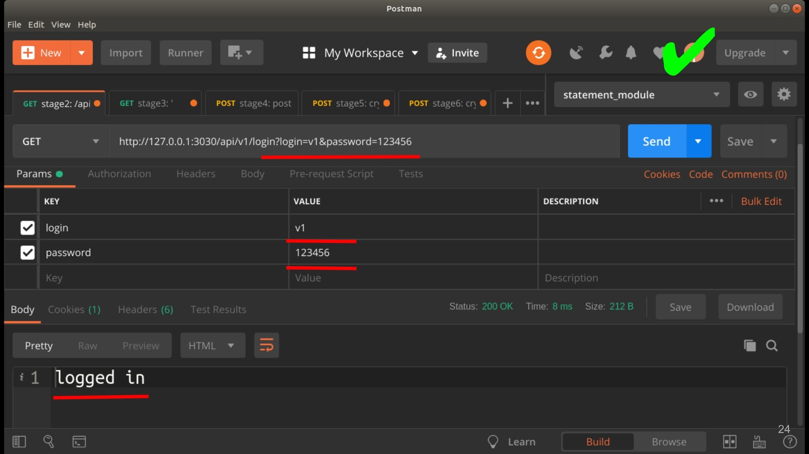
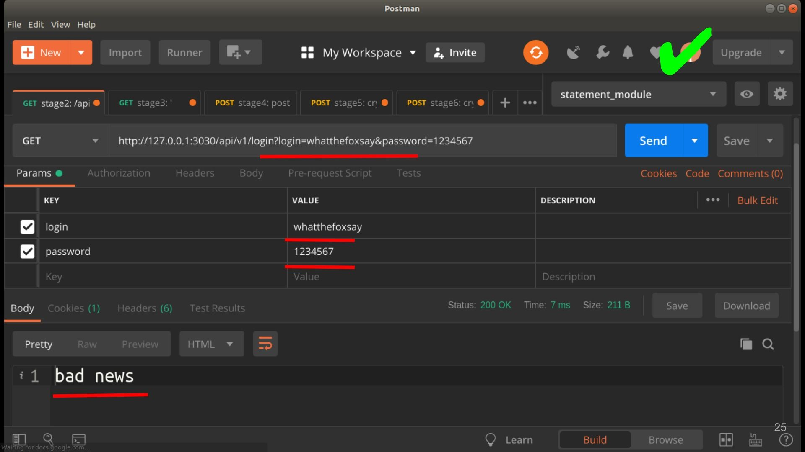
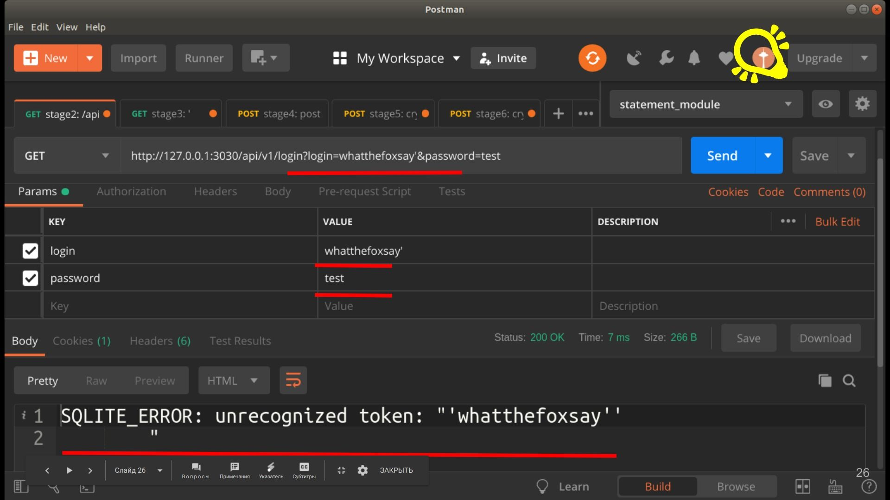
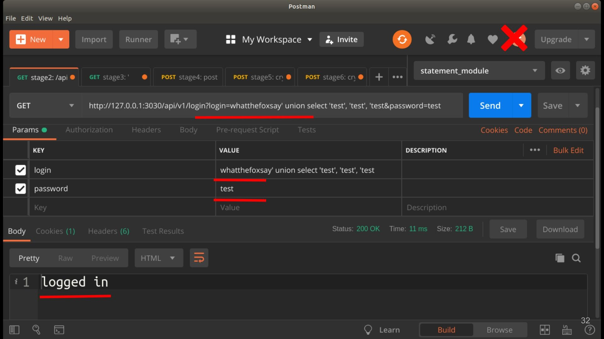
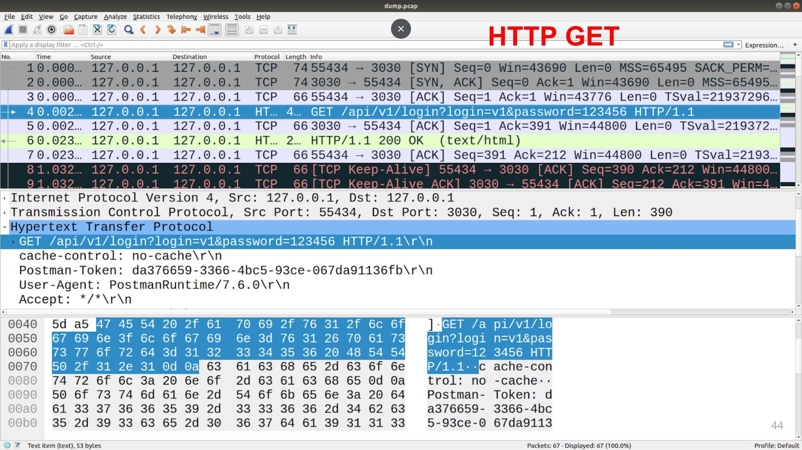
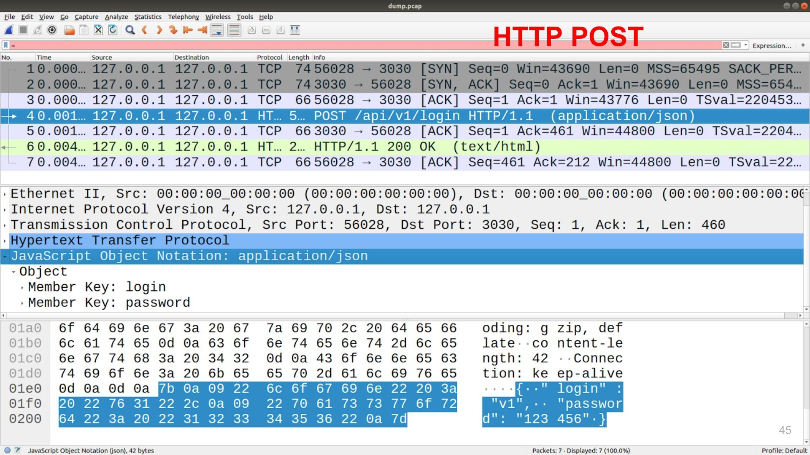
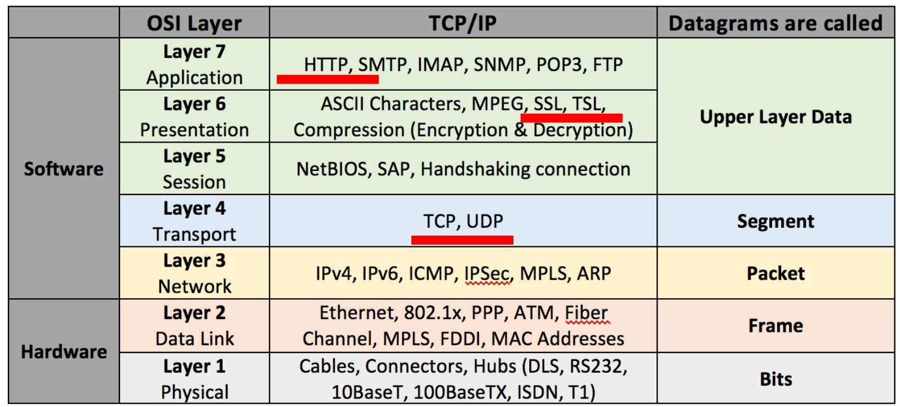
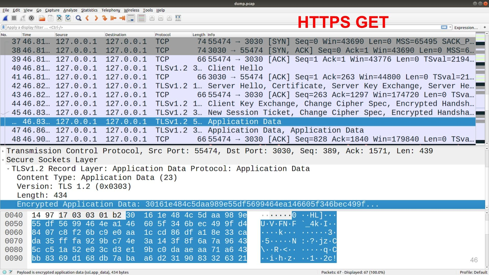
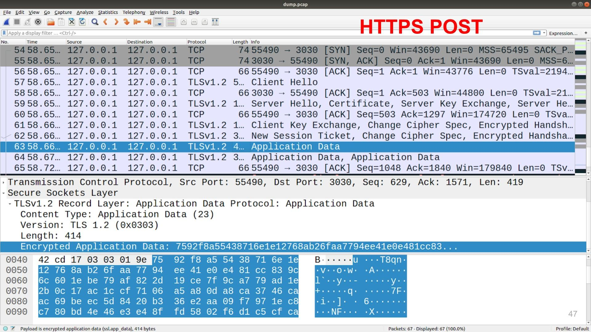

Введение
UPD: На основе данной статьи сделал доклад на CodeFest
Приветствую.
Последней каплей вдохновения для этого поста стал перевод курса MIT «Безопасность компьютерных систем» от @ua-hosting, огромное спасибо им за это. Если кто-то еще не читал/смотрел этот курс, то я настоятельно его рекомендую.
А для затравки и в качестве введения для этого поста приведу примеры, которые приводились во введение в этом курсе.
В первую очередь хочется сказать, что материал который предоставляется в этом посте нельзя использовать в незаконных целях и направлен на то, чтобы мы как разработчики знали как может вести себя злоумышленник и были защищены от этого, а не наоборот. Если вы захотите попробовать некоторые из подходов на практике, то прочитайте вот эту статью "Ответы юриста: как избежать ответственности за поиск уязвимостей".
Cool story 1
В определенный момент времени Yahoo решила дать своим пользователям получать доступ к аккаунту не только по логину и паролю, но и в случае, если вы забыли пароль, ответить на пару вопросов, ответ на который могли знать только вы (т.к. у них не было возможности отправить вам пароль на какой либо другой резервный аккаунт).
И в один прекрасный день, Сара Пэйлин, у которой был ящик на Yahoo, обнаружила, что данные ее почтового ящика утекли. Дело в том, что на кодовые вопросы для доступа к аккаунту были «Где вы посещали школу? Как звали вашего друга? Когда у вас день рождения?», а ответы на эти вопросы были на ее странице в википедии. И каждый мог получить доступ к ее аккаунту, просто прочитав страницу о ней.
Cool story 2
Еще один "прекрасный" случай произошел с парнем по имени Мэт Хонан. Злоумышленников заинтересовал твиттер этого человека. Из персонального сайта нашли его email - mhonan@gmail.com, а информация Whois одного из проектов говорила что его адрес 1559B Sloat Blvd, San Francisco. Далее злоумышленник через форму восстановления пароля google узнал его резервный ящик m••••n@me.com. Ящики на me.com - это по совместительству еще и AppleID - идентификатор, используемый для совершения покупок в магазине AppStore. Дабы восстановить пароль к аккаунту @me.com через звонок в техподдержку Apple, необходимо знать:
- адрес почты @me.com;
- billing address - адрес проживания;
- последние 4 цифры кредитной карты, привязанной к AppleID.
Первые два пункта хакер уже знал. Осталось узнать последние 4ре цифры кредитки, и в этом ему помог Amazon. Хакер позвонил в техподдержку Амазона, представился Мэттом и сказал, что хочет привязать к аккаунту еще одну кредитную карту. Все что нужно знать для этого - ФИО, мыло и адрес. Далее он повесил трубку и позвонил еще раз, но уже с другим запросом - он "забыл пароль от аккаунта" и хотел бы привязать еще один ящик для восстановления пароля. Всё, что нужно знать в таком случае - ФИО, адрес и номер свежей добавленной кредитной карты (!). Теперь осталось зайти на страничку Амазона и посмотреть последние 4 цифры привязанной старым хозяином кредитной карты. Вуаля! Подробнее об этом случае можно почитать здесь.
Какие выводы мы можем сделать по этим примерам:
- Взлом подразумевает наличие “плохого парня”
- Подход к ИБ должен быть глобальным
- Чем меньше мы открываем данных, тем безопаснее система.
Но давайте продолжим и рассмотрим технические детали и возможные уязвимости одного из основополагающих процессов - процесса аутентификации.
Так же очень хочется уделить особое внимание инструментам, которые помогут нам не быть слепыми котятами и дать возможность более прозрачно видеть детали процесса отправки запросов. В частности, изначально пост назывался "Анализ уязвимостей форм для аутентификации", но я из него убрал слово "форм", так как хочется показать такой инструмент, как postman.
Инструментарий
- Postman
- tcpdump
- wireshark
- katools (kali linux tool)
- puppeteer
Давайте рассмотрим очень простой пример.
Очень простой пример
Задача: нам нужно по логину и паролю аутентифицировать пользователя.
Для этого создадим табличку:
CREATE TABLE users (
login TEXT NOT NULL UNIQUE,
password TEXT NOT NULL
);Как БД будем использовать sqlite3.
И напишем запрос аутентификации:
app.get('/api/v1/login', (req, res) => {
db.all(`
SELECT rowid AS id, login, password
FROM users
WHERE login = '${req.query.login}'
`, function(err, rows) {
if (err) {
res.send(err.message);
} else {
let loginFlag = false;
if (rows && rows.length > 0) {
if (req.query.password === rows[0].password) {
loginFlag = true;
}
}
res.send(loginFlag ? "logged in" : "bad news");
}
})
})Полный листинг сервера здесь.
UPD: Никогда! Никогда! НИКОГДА! не выводите “голые” ошибки и стэктрейсы в ответ. Так как это даст дополнителную информацию злоумышленнику. Например, в нашем примереres.send(err.message); даст информацию о том, что мы используем SQLite.
Что здесь происходит, по GET запросу, мы идем в БД и ищем запись по логину.
Если такая есть, сверяем пароль который к нам пришел с тем, который записан в БД.
Если все ок выводим "logged in", если нет "bad news".
В базе у нас заведен пользователь с логин = "v1" и паролем "123456".
Этот код, является отличным рассадником уязвимостей, давайте посмотрим почему.
Во-первых. Давайте воспользуемся Postman и составим запрос:
127.0.0.1:3030/api/v1/login?login=v1&password=123456.

В ответ, мы получим "logged in", если мы введем другие данные, например 127.0.0.1:3030/api/v1/login?login=whatthefoxsay&password=test, то получим "bad news", т.е. API работает и выполняет свою задачу.

SQL инъекции
Но что будет, если мы отправим: 127.0.0.1:3030/api/v1/login?login=whatthefoxsay'&password=test

На придет SQLITE_ERROR: unrecognized token: "'whatthefoxsay''"
Происходит это потому, что мы используем вот такую конструкцию:
login = '${req.query.login}'И в результате формирования запроса мы получим:
SELECT rowid AS id, login, password
FROM users
WHERE login = 'whatthefoxsay'';Где есть синтаксическая ошибка в виде последнего знака '.
Ок. получив эту ошибку, мы можем догадаться что при обращении /api/v1/login идет запрос в БД с поиском логина и пароля.
Значит мы можем попробовать каким-то образом немного изменить запрос и подставить туда свои данные.
UNION
в SQL есть оператор UNION, который позволяет объединять запрос в один по строкам. Работает он так:
SELECT 1,2,3 UNION SELECT 3,2,1;Выведет:
1,2,3
3,2,1Давайте попробуем им воспользоваться:
/login?login=whatthefoxsay' union select 'test', 'test&password=testПолучим:
SQLITE_ERROR:
SELECTs to the left and right of UNION do not have the same number of result columnsага, в данном ответе нам говорят что количество колонок не совпадает. Ок. Давайте это исправим:
/login?login=whatthefoxsay' union select 'test', 'test', 'test&password=test
Получаем: logged in
Вуаля! мы прошли аутентификацию.
Как нам обезопаситься от таких случаев? Все драйвера для БД должны предоставлять инструменты для экранирования входных параметров. В примере с sqlite3 нам нужно использовать вместо:
conn.all(`
SELECT rowid AS id, login, password
FROM users
WHERE login = '${req.query.login}'
`,
function (err, rows) {}
);Вот это:
conn.all(`
SELECT rowid AS id, login, password
FROM users
WHERE login = $login
`, {
$login: req.body.login
},
function (err, rows) {}
);Полный листинг сервера здесь.
В этом случае символ ' будет экранироваться и мы получим что-то типа:
login = 'whatthefoxsay\' union select \'test\', \'test\', \'test'
Что нас спасет и при попытке отправить:
/login?login=whatthefoxsay' union select 'test', 'test', 'test&password=testПолучим: bad news
Драйвера всегда предоставляют возможность безопасной интерполяции параметров. Используете это!
Например в документации psycopg2 (python драйвер для работы с postgresql), написано:
Warning: Never, never, NEVER use Python string concatenation (+) or string parameters interpolation (%) to pass variables to a SQL query string. Not even at gunpoint.
Предупреждение: Никогда, никогда, НИКОГДА не используйте конкатенацию строк (+) или (%) интерполяцию, чтобы передать параметры в SQL запрос. Даже под дулом пистолета.
Разобрались.
Давайте пойдем дальше, и заметим, что мы отсылаем GET запрос с нашим логином и паролем.
Мало того! Мы используем http вместо https! Нужно помнить о том, что URL запроса (часть которого - это GET параметры)гораздо чаще логируются HTTP серверами и если у злоумышленника будет доступ к логам сервера, он сможет получить их.
TCP/HTTP(s) GET vs POST
в случае, с HTTP, что с POST, что c GET возможна очень простая атака посредника (Man in the middle (MITM)),
если конечно у нас есть возможность оказаться посередине. Как пример, вот вы пришли в кафе, подключились к wifi.
А какой-то плохой парень взломал роутер и решил записать весь трафик проходящий через него, чтобы узнать куда ходят посетители кафе.
В этом случае он на одном из узлов записывает tcp-дамп:
sudo tcpdump -i lo port 3030 -w ./dump.pcapЗдесь
-i lo- сетевой интерфейс который мы слушаем, так как у меня все развернуто локально я слушаюlocalhost.port 3030- чтобы не засорять эфир, ограничимся портом 3030, который слушает наше приложение.-w ./dump.pcap- говорит писать дамп в файл.
После отправим два запроса и GET, и POST на наше API аутентификации /api/v1/login.
По завершению записи мы воспользуемся wireshark, чтобы посмотреть что получилось.
И увидим, что в дампе оказались наши два запроса с явками и паролями.


Давайте подключим HTTPS и перейдем на POST
Для начала создадим самоподписанные сертификаты:
openssl req -nodes -new -x509 -keyout server.key -out server.certТеперь подключим их к нашему приложению:
const express = require('express');
const app = express();
const bodyParser = require('body-parser');
app.use(bodyParser.json());
const fs = require('fs');
const https = require('https');
const privateKey = fs.readFileSync('./server.key', 'utf8');
const certificate = fs.readFileSync('./server.cert', 'utf8');
const credentials = {key: privateKey, cert: certificate};
app.post('/api/v1/login', (req, res) => {
/* здесь без изменений */
})
const httpsServer = https.createServer(credentials, app);
httpsServer.listen(3030);Полный листинг сервера здесь
Если мы посмотрим на HTTPS трафик, то здесь будет все хорошо, так как SSL/TLS шифрует данные "между" TCP и HTTP протоколами (см. картинку ниже), т.е. все данные HTTP-запроса будут зашифрованы. Кстати, с HTTPS тоже могут быть проблемы, если сотворить определенную магию с сертификатами, но мы этой темы касаться не будем, скажу одно использовать самоподписанные сертификаты в большинстве случаев является плохой практикой.

А вот что видно в дампе:


Если отойти от аутентификации, архитектурный стиль REST API для получения данных рекомендует именно GET.
Но давайте представим, что вы пишете приложение для мед.страховой, где есть API /users, которое принимает параметры:
Имя, фамилия, отчество, дата рождения и номер полиса ДМС.
В таком случае наш запрос должен выглядеть примерно так:
/users?name=Vadim&last_name=Gorbachev&polic=123456.
Соответственно эта информация осядет в логах HTTP сервера, который пример запрос, и эти в них злоумышленник сможет получить пароль в незашифрованном виде. Ах да! шифрование пароля! Это следующая часть нашего доклада.
Шифрование (crypto vs bcrypt)
давайте зашифруем наши пароли, чтобы не хранить в БД в открытом виде, для этого воспользуемся модулем crypto:
crypto.createHash('md5').update(password).digest('hex');Полный листинг сервера здесь.
Окей, кажется теперь получше, да? Не совсем.
Во-первых, не используете MD5, почему спросите вы?
А потому, что команда:
crypto.createHash('md5').update('123456').digest('hex');сгенерирует нам хэш: e10adc3949ba59abbe56e057f20f883e
И если мы воспользуемся таким инструментом как google, то получим:
https://google.gik-team.com/?q=e10adc3949ba59abbe56e057f20f883e
что ваш хэш уже даже проиндексирован в поисковике.
Этот пример, конечно утрированный, если мы введем пароль, к примеру whatthefoxsay, его будет сложнее найти, так как он не настолько простой как 123456. Но тем, не менее взломать его возможно. И вообще, криптография нам дает только время. Т.е. любой хэш со временем можно взломать. Важно понимать что время может быть равно 10 секундам и 1 млн. лет. Поэтому чем более криптостойкие алгоритмы вы используете, тем надежнее у вас защита (но помните, что она никогда не будет равна 100%, хотя при хороших условиях будет к этому значению стремиться).
Кстати, хотелось бы упомянуть такой инструмент как katools который является сборником инструментов для анализа уязвимостей репозитория Kali Linux. в его состав входит такая вещь как findmyhash.
И с помощью команды
findmyhash MD5 -h e10adc3949ba59abbe56e057f20f883eмы cможем опросить популярные источники "не знаю ли они такого хэша?".
И мы получим:
***** HASH CRACKED!! *****
The original string is: 123456
The following hashes were cracked:
----------------------------------
e10adc3949ba59abbe56e057f20f883e -> 123456Крайне не рекомендую вводить в подобные инструменты боевые хэши которые вы используете на проде.
MD5 плох! Поэтому давайте воспользуемся, чем-то более надежным.
const getFuncSHA512Salt = (salt) => {
return (password) => {
var hash = crypto.createHmac('sha512', salt);
hash.update(password);
var value = hash.digest('hex');
return value;
}
};
const cryptoSHA512Salt = getFuncSHA512Salt("HVHSNrRWpP1ZSR4bnjXpiHCS1ENYcUuHO")Хотел отметить, что здесь мы добавляем соль HVHSNrRWpP1ZSR4bnjXpiHCS1ENYcUuHO.
Такое использование, это минимальный способ шифрования который стоит использовать в наше время (возможно, будет не так страшно использова sha256, но все же).
В той же документации к crypto:
const secret = 'abcdefg';
const hash = crypto.createHmac('sha256', secret)
.update('I love cupcakes')
.digest('hex');Они по умолчанию приводят пример хеширования уже с солью. Спасибо им!
Давайте немного отвлечемся и рассмотрим еще одну cool story. https://www.opennet.ru/opennews/art.shtml?num=46768
Cool story 3
Возможно, вы помните как npm отозвал пароли около 170 тыс. аккаунтов и вот этот пост. А все дело в том, что очень интересный человек Сковорода Никита Андреевич @ChALkeR, который сейчас состоит в рабочей группе по безопасности node.js, провел анализ уязвимости аутентификации пользователей в npm.
возможно вы использовали пакеты из списка: Express, EventEmitter2, mime-types, semver, npm, fstream, cookie (и cookies), Bower, Component, Connect, koa, co, tar, css, gm, csrf, keygrip, jcarousel, serialport, basic-auth, lru-cache, inflight, mochify, denodeify, и многие другие.
К которым Никита получил доступ и описал подробности в статье опубликованной 2015-12-04.
Позже он провел еще одно исследование от опубликованное 2017-06-21
В котором рассказал что ситуация слабо изменилась. В этот раз список ТОП пакетов был такой: debug, qs, supports-color, yargs, commander, request, strip-ansi, chalk, form-data, mime, tunnel-agent, extend, delayed-stream, combined-stream, forever-agent, concat-stream, vinyl, co, express, escape-html, path-to-regexp, component-emitter, moment, ws, handlebars, connect, escodegen, got, gulp-util, ultron, http-proxy, dom-serializer, url-parse, vinyl-fs, configstore, coa, csso, formidable, color, winston, node-sass, react, react-dom, rx, postcss-calc, superagent, basic-auth, cheerio, jsdom, gulp, sinon, useragent, deprecated, browserify, redux, array-equal, bower, jshint, jasmine, global, mongoose, vhost, imagemin, highlight.js, tape, mysql, mz, nock, rollup, gulp-less, rework, xcode, ionic, cordova, normalize.css, electron, n, react-native, ember-cli, yeoman-generator, nunjucks, koa, modernizr, yo, mongoskin, и многие другие.
Результаты оказались ошеломляющими:
- из 126 тыс, удалось получить доступ к 17 тыс, что примерно 13%
- Количество пострадавших пакетов 73983 — 14% экосистемы.
- Количество пострадавших через зависимости - 54%
- Получил аккаунты 4 пользователей из списка топ-20
- 42 пользователя имели более 10 миллионов загрузок в месяц (каждый).
- 13 пользователей имели более 50 миллионов.
- Одним из аккаунтов с доступом к koa был "password"
- 662 - «123456», 174 — «123», 124 — password».
- 11% пользователей повторно использовали свои просочившиеся пароли: 10,6% - напрямую, и 0,7% — с очень незначительными изменениями.
- т.е. он мог бы контролировать 1 972 421 945 загрузок в месяц (напрямую), это 20% от общего числа.
Заметьте 662 пользователей использовали пароль 123456. А вы говорите, я утрирую =)
Один из кейсов получения паролей, был использование базы утекших паролей с других ресурсов.
Например, вы зарегистрировались с паролем whatthefoxsay в npm и на сайте blabla.site. Если взломают сайт blabla.site и получат все явки из него. Как вы думаете злоумышленники не захотят пройтись по ТОП-20 сайтам (таких как gmail, facebook, twitter, ..., npm, github) с попытками ввода логинов/паролей из базы?
Чтобы проверить есть ли у вас утекшие логины, можно воспользоваться https://haveibeenpwned.com/ , который рекомендует npm.
Будете ли вы получать спам на почту после того как введете вашу почту? Я не знаю, но если вы доверяете npm и их рекомендациям, то можете проверить =)
Возможно, хороший способ обезопасить себя от подобных ситуаций является использование менеджеров паролей.
Можно ознакомиться с топом в этой статье, многие рекомендуют 1password.
Но давайте не будет на этом задерживаться и пойдем дальше.
crypto vs bcrypt
Давайте, обратимся к гуру интернетов чтобы узнать действительно ли мы делаем все правильно.
И по запросу node.js best practice наткнемся на репозиторий,
который действительно содержит очень много нужных и полезных рекомендаций + к этим рекомендациям многие прислушиваются, о чем свидетельствуют звездочки на github, которых около 23 тыс.
В нем есть раздел 6-security-best-practices, в котором даются советы и на часть примеров которые мы рассмотрели и на многие другие ситуации.
Среди которых есть пункт: 6.8. Avoid using the Node.js crypto library for handling passwords, use Bcrypt
Пароли или секреты (ключи API) должны храниться с использованием безопасной функции hash + salt, такой которую предоставляет bcrypt, которая должна быть предпочтительным выбором по сравнению с реализацией JavaScript из-за соображений производительности и безопасности.
Также обратим внимание на призыв не использовать Math.random() в алгоритмах шифрования.
Не будем углубляться, но кому интересно почитайте статью Майорова Случайные числа не случайны.
Но вернемся к crypto vs bcrypt. Нам предлагают использовать код:
// asynchronously generate a secure password using 10 hashing rounds
bcrypt.hash('myPassword', 10, function(err, hash) {
// Store secure hash in user record
});
// compare a provided password input with saved hash
bcrypt.compare('somePassword', hash, function(err, match) {
if(match) {
// Passwords match
} else {
// // Passwords don't match
}
});Давайте же последуем совету! И перепишем наше API на:
bcrypt.hash("whatthefoxsay", 10, function(err, hash) {
// Store secure hash in user record
db.createUser(conn,'v7', hash)
});
app.post('/api/v1/login', (req, res) => {
conn.all(`
SELECT rowid AS id, login, password
FROM users
WHERE login = $login
`, {
$login: req.body.login
},
function (err, rows) {
if (err) {
res.send(err.message);
} else {
if (rows && rows.length > 0) {
// compare a provided password input with saved hash
bcrypt.compare(
req.body.password,
rows[0].password,
function(err, match) {
res.send(match ? 'logged in' : 'bad news');
}
);
} else {
res.send('bad news');
}
}
})
})Кажется что все выглядит пуленепробиваемое! Но!
Заметим один нюанс. Давайте попробуем устроить небольшой брутфорс пар логин+пароль по нашему API.
Воспользуемся подобной функцией:
const sendRequest = function (login, password) {
const result = {
start: Date.now(),
login,
password
}
const promise = new Promise(function (res, rej) {
request.post(
'https://127.0.0.1:3030/api/v1/login',
{ json: { login, password } },
function (error, response, body) {
if (!error && response.statusCode == 200) {
result.end = Date.now();
res(result);
}
}
);
})
return promise;
}И отправим по 10 запросов на каждый из логинов v7, v7_wrong, v7_wrong2
$ node ./attaker.js
v7 917
v7_wrong 40
v7_wrong2 39хмм.. давайте отправим еще раз:
$ node ./attaker.js
v7 837
v7_wrong 42
v7_wrong2 45Заметим что ответы с логином v7 заметно отличаются от остальных. Что здесь происходит, а происходит то, что если пользователь мы угадали, дальше идет тяжелый, надежный алгоритм bcrypt, который шифрует нам password из запроса и пытается сравнить с хэшем из БД.
А давайте попробуем вернуть crypto и sha512 с солью:
$ node ./attaker.js
v6 54
v6_wrong 32
v6_wrong2 30
finishЗаметим, что здесь разница не такая значительная, и если мы хостились на удаленной машине, а не на localhost, то погрешность в скорости прохождения пакетов по сети просто бы съела это 20-30 мс в 10 запросов. Значит ли это что bcrypt плох? Конечно нет. Мы просто неправильно его готовим, о чем, к сожалению best practice нам не говорит. На момент написания статьи, мы обсуждаем этот момент в issue, присоединяйтесь.
Но если мы изменим наш код таким образом, чтобы мы всегда вычисляли хэш. Например:
if (rows && rows.length > 0) {
// compare a provided password input with saved hash
bcrypt.compare(req.body.password, rows[0].password, function(err, match) {
console.log('good');
res.send(match ? 'logged in' : 'bad news');
});
} else {
bcrypt.compare(
req.body.password,
"$2b$10$m.fhQdLyRI8ExS/GGh43FOkO.XTCS85QdVpn6sINdlxTGQSJe3Ydi",
function(err, match) {
console.log('bad');
res.send('bad news');
}
);
}То получим:
$ node ./attaker.js
v7 786
v7_wrong 778
v7_wrong2 762
finishЧто вполне нас обезопасит от тайминговых атак. Кстати, по этой теме есть хорошая статья
usability vs security
Напоследок хочется рассмотреть еще один пример. Который не связан с аутентификацией напрямую. Но связан с формой регистрации. Сейчас фронтендеры ослеплены лучшими практиками UX, все стараются максимально ублажить пользователя и иногда в этой спешке теряются важные нюансы, о которых не стоит забывать.
Как пример, в статье предлагается уведомлять пользователя, после того как он ввел почту, зарегистрирован акк на этот email или нет. Это конечно красиво, но не до конца. Конечно мы можем добавить какие-то дополнительные проверки, на то чтобы выявить что к нам за проверкой почты стучится человек, а не машина. Но вы посмотрите за окно!
Сейчас на улице другие законы! селфдрайвинг кары сбивают промо роботов.
И есть такой волшебный инструмент как puppeteer, с помощью которого притвориться человеком гораздо проще. И мы можем брутфорсом пройти по форме регистрации и собрать базу email'ов пользователей, тех или иных ресурсов.
Для этого есть спасение - это ограничение количества запросов. Например как это делает github. На его ограничение даже можно наткнуться руками, если очень настырно пытаться его спрашивать.

Ссылки на источники
- Листинги кода и примеры описанные в статье
- Курс MIT «Безопасность компьютерных систем»
- Ответы юриста: как избежать ответственности за поиск уязвимостей
- Про Мэта Хонан
- psycopg2: The problem with the query parameters
- Тайминговая атака на Node.js — когда время работает против вас
- Исследование @ChALkeR
- Майоров "Случайные числа не случайны"
- Node.js best practices list
- Node.js Security Working Group
- Юзабилити форм авторизации
Спасибо!